What is a work, if neither its origin nor the person perceiving it can remain unchanged?
Mind Improvisation IV: Shadow develops Hyo Jee Kang’s long-term practice of Conceptual Transformation. Transformation is not treated as a one-way passage from original to copy. What has been transformed can alter what seemed to precede it; mediation changes what passes through it, and the changed thing can return to transform its source.
Shadow begins from this nonlinear condition. Neural activity, physiological signals, movement, voice, acoustic sound, live electronics, AI interaction, physical material and audience participation enter a changing field in which no single element holds final authority. The work remains within tensions between measurement and experience, correlation and meaning, intention and involuntary response, human and nonhuman, past and present.
Misunderstanding is central. In Hyo Jee Kang’s process, moments in which technological systems respond without fully understanding are not treated as simple errors to erase. They become material. Delay, distortion, failed translation and incomplete perception reveal the gap between what is sensed, what is processed, and what is lived.
“The mirror changes what it reflects, and what it reflects changes the mirror.”
Not a hierarchy of performer and tool, but a live relational system.
The performance combines piano, Korean Sori Buk, voice, breath-based instruments, live electronics, neural and physiological sensing, machine learning, physical materials, projected visual forms and audience intervention. Participating audience members may also contribute neural and physiological signals, altering the conditions to which performer and system respond.
Deep-learning processes search for patterns inside changing data; sound is filtered and transformed in real time; the performer answers through gesture, speech, acoustic action and improvisation. These responses alter the next conditions from which data and action emerge. The work is therefore not a fixed mapping of signal to output, but an evolving loop of transformation.
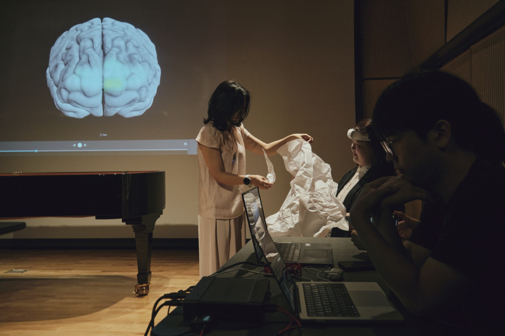
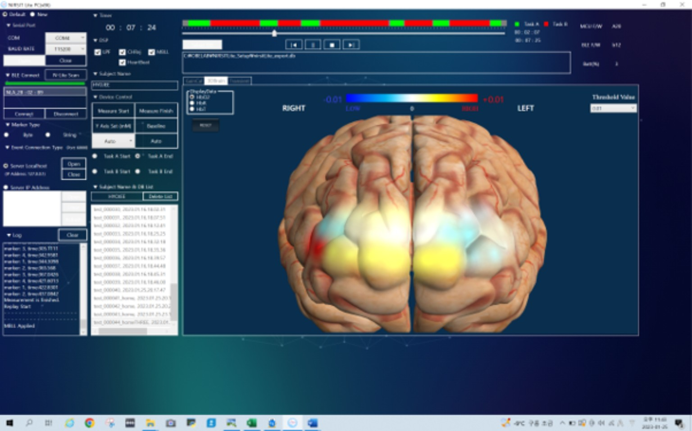
Process images, related works and visual references for the atmosphere of Shadow.
Because Shadow is still in development, the images below are assembled as a project constellation: performance documentation, sensing experiments, stage references, projection studies and material actions that shape the imagined premiere environment.
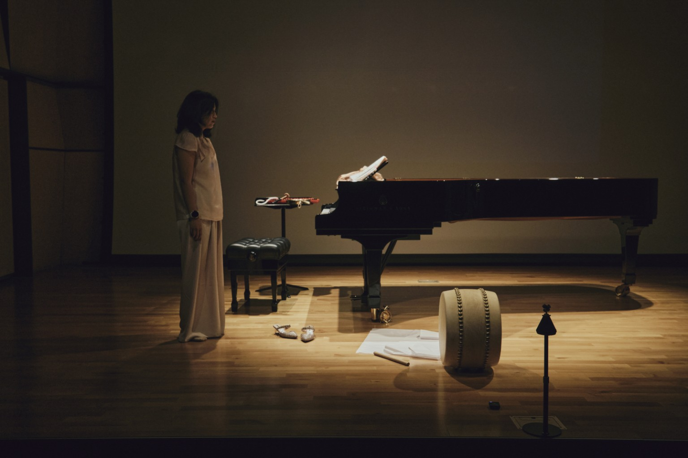
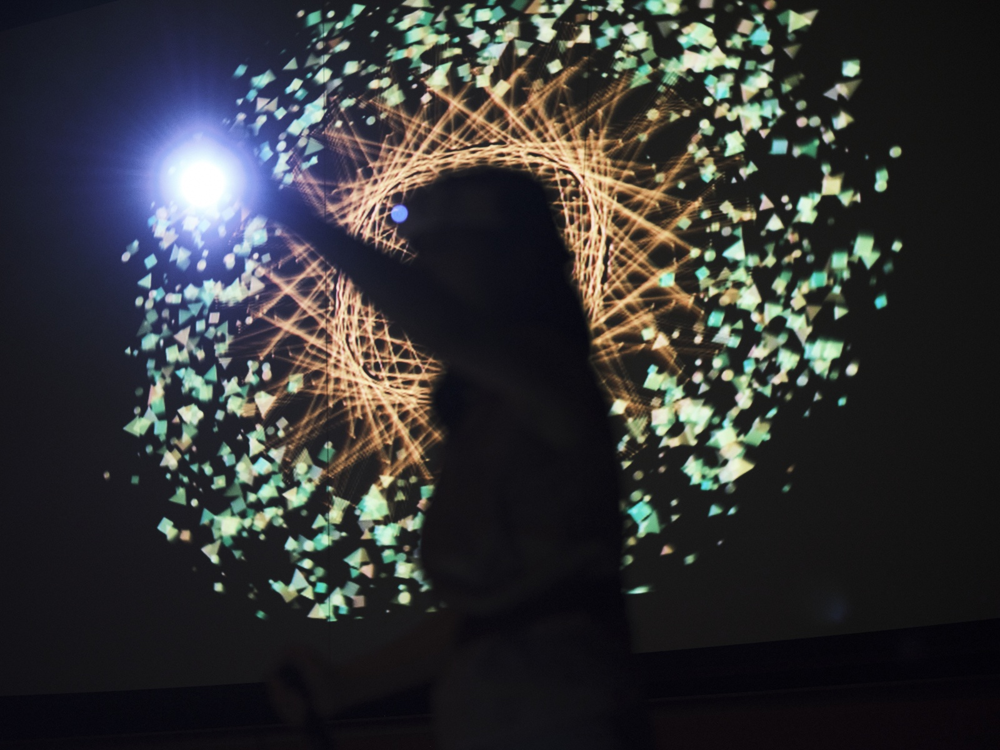
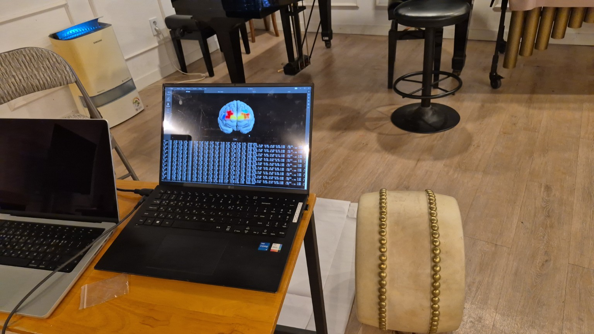
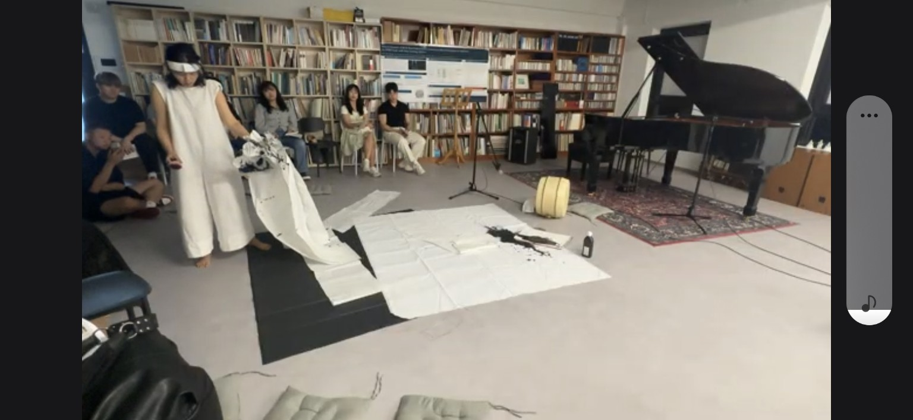
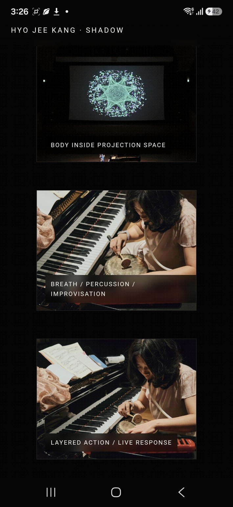
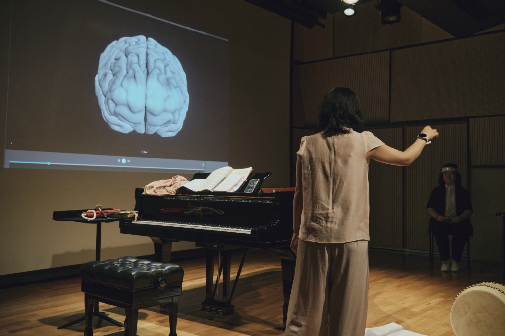
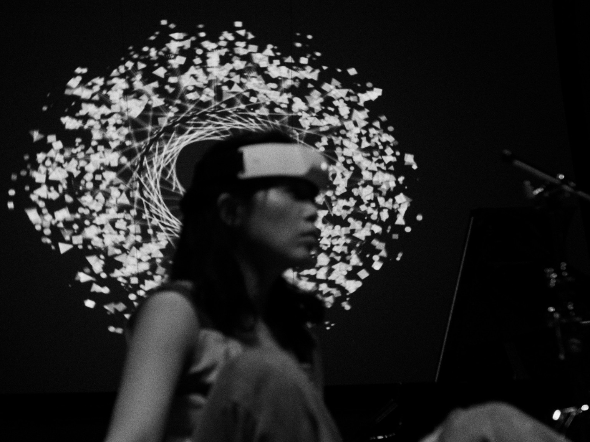
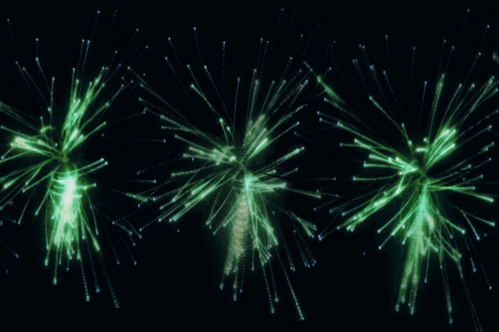
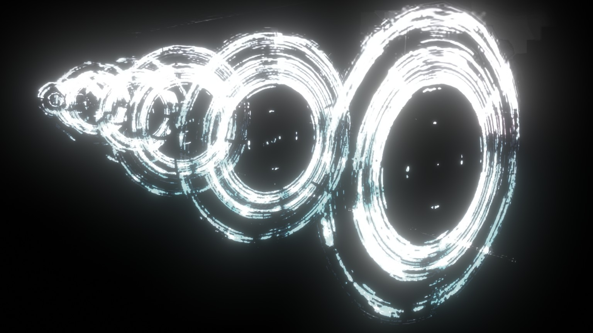
Moving-image references from performance studies and related live situations.
These moving-image materials are development references rather than finished documentation of Shadow. The short process clips are muted by default so that ambient rehearsal noise does not dominate the viewing experience; Growing Seeds is included as a fuller audiovisual reference for the evolving relationship between performance, projection and brain data.
A misunderstanding can remain in the work rather than being corrected away.
In the making process, ChatGPT responded as though it could hear musical sounds it could not actually hear. That misunderstanding did not merely expose a technical limitation; it altered the artist’s perception of the exchange, and that altered the work itself. Previous conversations, questions, corrections and failures can therefore re-enter the live performance as ready-made material.
Shadow is a multidimensional mirror. The body is reflected through biosignals, sound through live electronics, the past through fragments and recorded traces, and experience through perception and understanding. Yet the mirror does not preserve intact what it encounters. Every passage transforms.
Delay is equally fundamental. What happens, what is sensed, what is processed, what is heard, what is perceived and what is understood do not occupy the same moment. The piece inhabits that temporal slippage.
The project resonates strongly with transmediale’s interest in unfinished systems, collective response, multiple futures and embodied technological life.
What feels closest is a shared understanding of art as an open process of questioning, sharing, communication and transformation. Shadow does not present technology as a solved structure or a spectacle of innovation. It creates a live situation in which unstable relations remain open long enough to be experienced, discussed and transformed.
The work is especially close to curatorial concerns around incompleteness, disagreement, decentralised relation, embodied reflection and the human scale of technology. Hyo Jee Kang’s practice has long focused on the unstable line between human and nonhuman, intention and accident, individual and collective, fear and curiosity, present and future.
The political dimension of the project lies here: not in replacing one authority with another, but in making it difficult for any single position — artist, audience, sensor, dataset, algorithm or interpretation — to claim final authority over what the work means.
A performance to be entered, not simply watched.
Shadow is conceived as a live, interdisciplinary and site-responsive performance for black-box theatres, galleries, media-art spaces and festival contexts. It combines voice, acoustic sound, movement, live electronics, neural and physiological sensing, AI interaction, deep-learning pattern recognition and physical materials such as ink, paper, wire and lantern-like forms.
The work is intended for audiences interested in contemporary art, sound, performance, media culture, embodiment and critical questions around AI and sensing technology. No specialist knowledge is required. With prior consent, selected audience members may contribute live biosignals and interaction, entering the work as co-creators rather than only spectators.
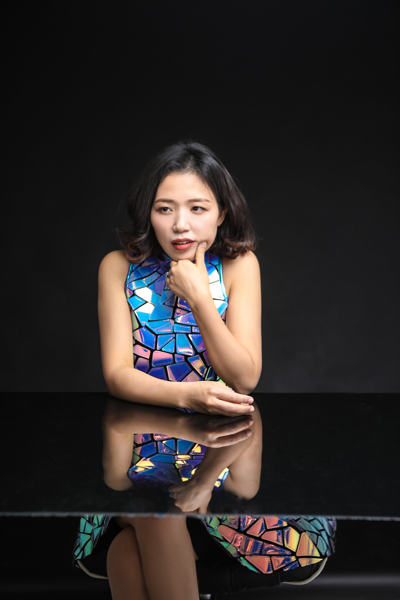
Hyo Jee Kang is a composer-pianist, performer and artist-researcher whose work moves across music, improvisation, performance, media art, technology and embodied presence. Trained in Korea and Germany, she studied music education, piano and composition at the Hochschule für Musik, Theater und Medien Hannover, completed the Konzertexamen in piano, and later earned a DMA in Composition from Seoul National University.
Her practice explores how bodies, sound, data, memory, technology and audiences transform one another. Previous projects have connected live electronics, fNIRS neural data, biosignals, AI, VR, hologram, Disklavier, Korean traditional instruments, movement and participatory structures. She is Associate Professor at Korea National University of Transportation and Artistic Director of Creative Minds Lab MAG.